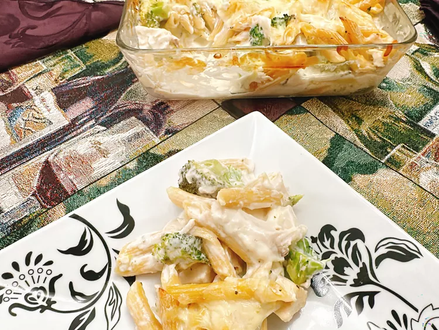

Home
Chicken Pasta

Preparation of this rotisserie chicken pasta bake is streamlined by using rotisserie chicken, cooking broccoli in the same pot as the pasta, and making a quick, creamy sauce in a high-powered blender.
Ingredients
- 6 ounces high protein pasta, such as Barilla®
- 4 ounces chopped broccoli florets
- 8 ounces rotisserie chicken, cut into bite-sized pieces
- 2-ounce chunk Parmesan cheese
- 8 ounces high protein cottage cheese, such as Good Culture®
- 4 fluid ounces high protein milk, such as Fa!rlife®
- 2 ounces low-fat cream cheese
- 1/2 teaspoon granulated garlic
- ¼1/2 teaspoon Cantanzaro herbs
- 4 ounces shredded mozzarella cheese, divided
Steps
- Preheat the oven to 375 degrees F (190 degrees C). Lightly grease a casserole dish.
- Bring a large pot of salted water to a boil, and cook pasta for 7 minutes. Add broccoli; cook for 2 minutes more. Drain pasta and broccoli.
- Add Parmesan chunk to a high powered blender, such as a Vitamix. Blend on High until Parmesan chunk is finely ground. Add in cottage cheese, milk, and cream cheese; blend until smooth. Pour mixture into a large bowl. Stir in granulated garlic and Cantanzaro herbs. Add in the pasta, broccoli, chicken, and half the mozzarella cheese; stir until combined.
- Pour into the prepared casserole dish. Top with remaining mozzarella cheese.
- Pour into the prepared casserole dish. Top with remaining mozzarella cheese.
- Bake in the preheated oven until bubbly, about 30 minutes. Serve immediately.